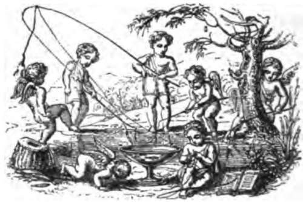

Fishing From Piers And Harbours. Part 4
Description
This section is from the book "Fishing", by Horace G. Hutchinson. Also available from Amazon: Fishing.
Fishing From Piers And Harbours. Part 4
The grey mullet, about the most difficult fish to catch in British seas, is essentially the property of the harbour-fisher, for this fish delights in the soft food to be found alongside quays and docks. The finest of tackle must be used, and even the smallest float is enough at times hopelessly to frighten these shy fish. The ideal mullet tackle perhaps is a very light single-gut paternoster, with a half-ounce green pear-shaped lead and a couple of small hooks, attached by neat and inconspicuous knots, and without any of the brass bars or other device that might tend to frighten the mullet. For bait a few lively ragworms would be hard to beat, but macaroni has been used with success at Weymouth, and I have made good catches at Leghorn with paste flavoured with anchovy. But the mullet of southern seas are far easier to catch than those of colder climates. As a case in point, I recollect a small shoal of perhaps fifty grey mullet, none of them weighing more than a pound, collecting round the steam-pipe of my steamer, just as the anchors were being weighed off Mogador. I had only just joined her in time to sail, and found a number of passengers busily engaged in trying to catch these mullet with conger-hooks baited with pieces of fish from the cook's galley. English mullet would have been scared out into mid-Atlantic by such an indignity, but these fish merely crowded into the warm blast of the pipe, and took no notice of the baited books. Taking a small hook on gut from my pocket-book, and sending one of the children present for a piece of crumb of bread, I borrowed one of the lines, and in less than five minutes, and just as the anchors were up, and the screw churning the green water into a white mist that hid the mullet for ever from our view, I had a couple of them swimming in a ship's bucket, and somebody's children had them that evening for their dinner. The centre of grey mullet fishing in this country is, I think, Littlehampton. At all events I know of no other port at which this fish is so methodically angled for. There are, or were, men at Littlehampton who, throughout the summer, whenever the tides suited, were up and fishing at the end of the harbour works soon after dawn. Once or twice I even found myself in their company, but a few failures, together with the memories of happier luck in the Mediterranean six years earlier, soon weaned me of that passion. At the same time, the grey mullet is eminently worth the sea-angler's best efforts, and I am not sure but I may give it a week or two yet at Weymouth or some other favourite haunt. These problems only want a little effort. Five years ago I wrote, as I thought, that the bass was a vanishing fish and hardly to be reckoned seriously except as angels' visits; yet, for the last three years, when circumstances happen to have brought me and the bass together, I have been out fishing scores of times for nothing else, and have, on the whole, met with my share of luck.
It is all important, for both the angler's own peace of mind and that of his friends, to recollect how great a share luck must always have in the success or failure of the sea-angler. I do not say that it is everything. It is not. Many a man will hook a fine fish and lose it from sheer inexperience of how to bring it to the net or gaff. What I mean by laying this stress on luck is that, other things being equal, and given the same knowledge of the subject, one may have luck and the other may not. The first will fill his boat with fish, or even his end of the boat, and the other will catch nothing. On the other hand, however, given equal luck, the man who knows how to fish will score against the man who does not. That is always the consolation of the expert. It may be that the energies decline, and that the veteran is no longer able to face the cold blasts and long exposure; nay, even the fighting strength of big fish may be too much for his waning muscle. Well, he must brood, not with aught of envy or uncharitableness, over the fire or in the sun-bathed garden of his old age, and must console himself with talking over the old battles in exchange for the new ones. Sometimes he will find a new wrinkle worthy of ungrudged admiration. Sometimes, again, he will chuckle over the greater catches of his youth, when fish were more, and fishermen less, plentiful than now. There are compensations on both sides. The vigour of youth and the experience of age stand in different shoes. "Si jeunesse savait; si vieillesse pouvait"-the saddest rubric ever penned, yet not without its bright side.

Continue to:
- prev: Fishing From Piers And Harbours. Part 3
- Table of Contents
- next: Chapter XXXV. Some Notes On Baits